Drawing a track#
This page shows how to draw a track of your own, with the router from Setting up routing.
The images also use the map from Turning on maps, the DEM from
Elevation data and hillshading and Example.gpx from
Loading a GPX file.
Images: © OpenStreetMap contributors; Datenquelle: Land Tirol - data.tirol.gv.at, CC BY 4.0;
Example.gpx: fuzzybear, CC BY-SA 4.0.
Starting a track#
While you draw, a bar at the top of the map holds the drawing tools. Save as new saves the track (see Saving the track); Abort throws it away.
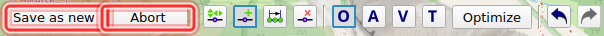
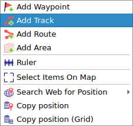
Right-click the map where the track should start and click Add Track. Holding the left mouse button down on the map for a moment opens the same menu.
Move the mouse to where the track goes next and click. Each click adds a point, and a straight line joins it to the point before. For straight lines, O must be active in the bar; if another letter is active, click O first.
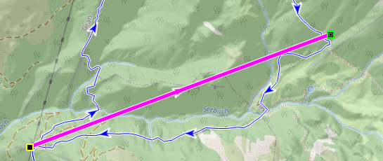
When the track is done, right-click to stop adding points. To continue drawing, move the mouse just past the first or last point until a red square marks it, and click.
Drawing along paths#
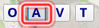
While you add points, click A in the bar, or press the A key.
Move the mouse to the next point and hold it still for a moment. The router finds the way along paths and roads, and the line follows it. It routes for the profile selected in the Routing panel. Click to add that part to the track.
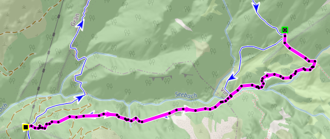
A needs a router that routes on the fly; see What a router does. Without one, its button is gray. The letter that is active when you save or abort the track is active again when you start the next one.
Drawing along a track#
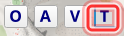
Right-click a loaded track where your track should start, for example the one in
Example.gpx, and click Add Track. Then click T in the bar, or press the T key.Move the mouse along that track to the next point. QMapShack shows that track in yellow, and your line follows it. This works only when your last point and the mouse pointer both lie on that track. Click to add that part to the track.
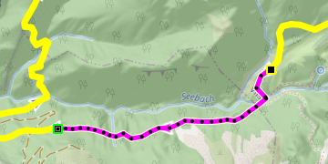
Straight lines and vector maps#
Click O, or press the O key, to draw straight lines again. V, or the V key, follows the lines of a vector map, such as a Garmin map. You rarely need it: the map and the routing data usually both come from OpenStreetMap, so A already follows the same paths.
Correcting the track#
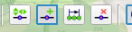
Use the four buttons to the right of Abort to change the points of the line. From left to right, they move, add, select a range of and delete points.
To move a point, click the first button or press Ctrl+M. Click the point, move the mouse and click again to drop it.
To add a point, click the second button or press Ctrl++. Click the line between two points: the new point sticks to the mouse. Click again to drop it. To add points at the start or end, move the mouse just past the first or last point. When a red square marks that point, click. Each click adds a point there; right-click to stop.
To select a range, click the third button or press Ctrl+R, then click the first and the last point of the range. Two buttons appear: one deletes the points in between, the other reconnects the two points. The active letter in the bar decides how.
To delete a point, click the fourth button or press Ctrl+-, then click the point.
When you move, add or delete a point, QMapShack joins the points next to it again. The active letter in the bar decides how. Right-click or press Esc to cancel moving or adding a point.
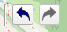
The arrow buttons at the right end of the bar undo and redo the last change.
Saving the track#
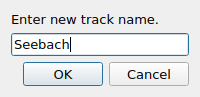
Click Save as new in the bar. Enter a name for the track and click OK.
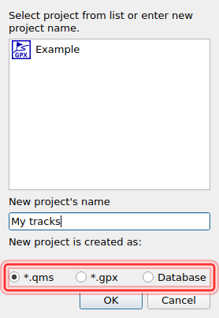
Select the project the track goes into, or enter a name for a new project under New project’s name.
For a new project, after you enter the name, under New project is created as, choose how QMapShack saves it. *.qms is QMapShack’s own file format, *.gpx a GPX file that other programs and devices read too. QMapShack preselects one, so make sure it’s the one you want. The third choice, Database, is explained in Databases.
Click OK.
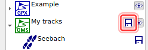
The Workspace panel now lists the track under its project.
The save button on the project’s row, marked in the image, means the project has changes that aren’t saved to a file. Click it to save the project.
The first time you save the project, QMapShack asks where to save it. The dialog suggests the
project’s name as the file name and opens in the folder you last loaded from or saved to. If you have set up the
home folder, QMapShack points the dialog to its GPX folder.
On the track’s row, the same symbol is not a button but a change indicator. It shows that the track has changed since the project was last saved.
Elevations from the DEM#
While you draw, the Track Metrics box at the top left of the map shows the track’s length and how far it climbs and descends. The elevations come from the DEM; see Elevation data and hillshading. So turn the DEM on before you draw, and draw where it has data.
When you save the track, QMapShack gives its points their elevations. Where the DEM has no data, a point gets none, and Track Metrics shows Invalid elevations! instead of the ascent and descent.
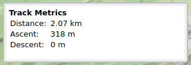